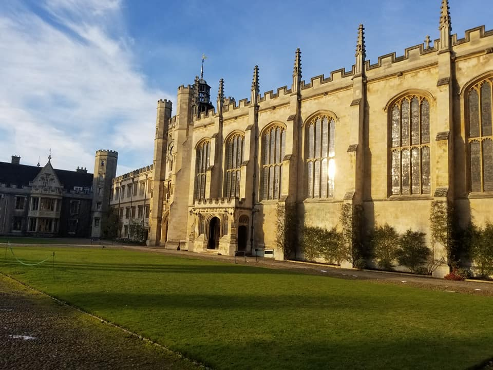

Corbin Taylor
Doctoral Candidate
Department of Astronomy
University of Maryland - College Park

My name is Corbin Taylor and I am an Astronomy Doctorate Candidate at the University of Maryland. I study supermassive black holes (black holes millions to billions times the mass of our sun), working to better understand how these "cosmic titans" grow over the history of the Universe. In order to do this, I use large-scale computing to solve the equations of Einstein's General Relativity and to create useful, realistic models of these systems as a way to better inform the interpretation of data.
Created by Corbin Taylor
Updated on 13 August 2019
Updated on 13 August 2019